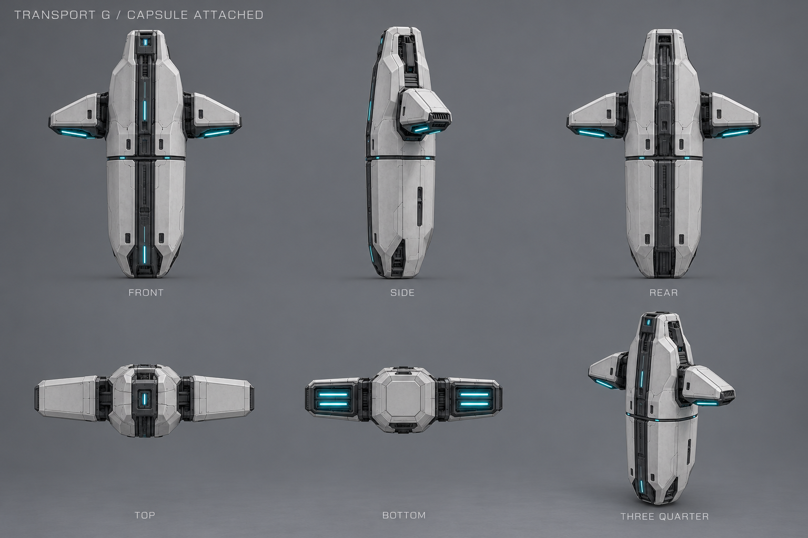
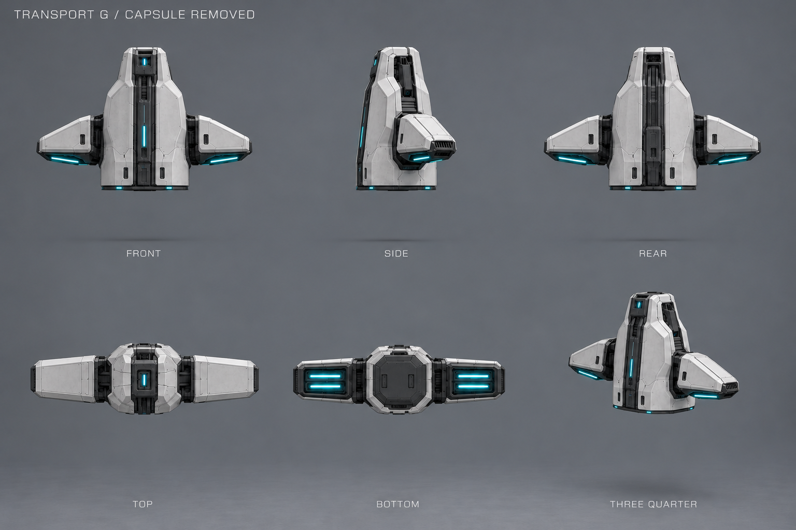
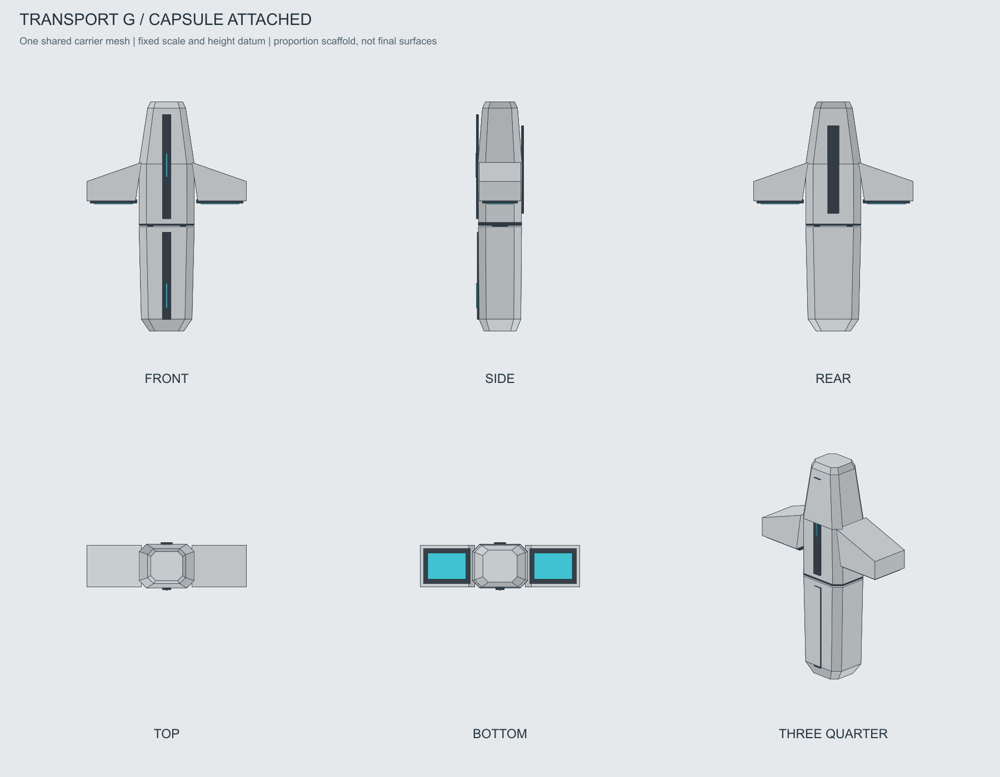
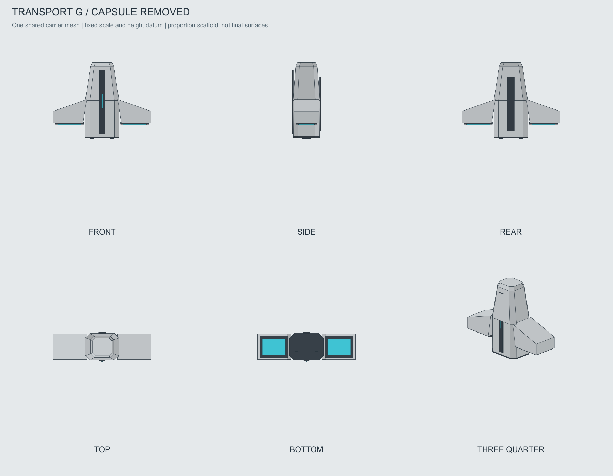

Транспортник G · пакет для моделирования
Выбран исходный G. Два состояния одного носителя: с закрытой нижней капсулой и без неё.
Основной визуал задаёт внешний вид. Художественные ракурсы уточняют оболочки и материалы; точность их проекций ограничена генерацией. Контрольные листы получены из одного каркаса с одинаковым верхним носителем, масштабом и плоскостью стыка. Каркас упрощён и не является точной реконструкцией каждой панели.
Принятый основной визуал

С закрытой капсулой
Спереди · сбоку · сзади · сверху · снизу · 3/4


Носитель без капсулы
Спереди · сбоку · сзади · сверху · снизу · 3/4


Контрольные проекции одной сетки и OBJ
Верхний корпус и двигатели в двух OBJ совпадают по вершинам и граням. После снятия капсулы носитель не растягивается. На контрольных листах сохранены масштаб и высотная привязка. Тыльные панели и скрытый стык — предложения для детализации.
С закрытой капсулой

Носитель без капсулы

Отдельная закрытая капсула · OBJ · Пропорции и оси · Проверка общих частей
Стык и разделение
| Деталь | Правило |
|---|---|
| Верхний носитель | Одна модель для обоих состояний. Два двигателя, их положения и оболочки сохраняются. |
| Нижняя капсула | Отдельный закрытый модуль. Без окон, стеклянных камер и видимой массы. Отделяется вниз от горизонтального стыка. |
| Крепление | Скрытые замки и утопленный стык. Конструкция замков — предложение, не окончательная механическая схема. |
| Размеры | Условные пропорции, не метры и не игровой footprint. Масштаб, вместимость, коллизии и анимации ещё предстоит согласовать. |
Задание моделлеру и ограничения · Сверка двух состояний · Реестр пакета · История выбора